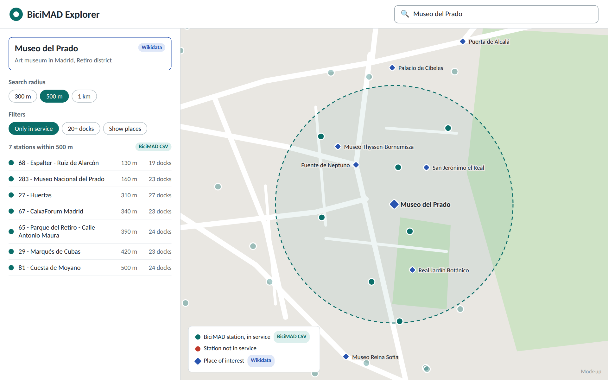
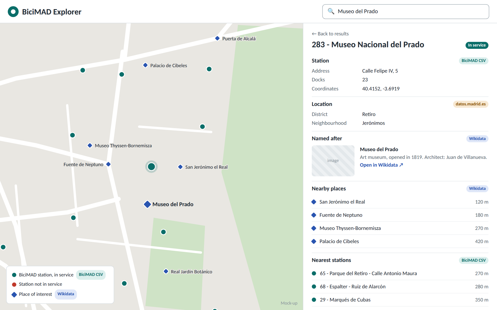

BiciMAD Explorer – finding and understanding Madrid's public bike stations through linked data.
BiciMAD Explorer is a web application that helps people use Madrid's public bike sharing service (BiciMAD) in relation to the places they actually care about. Instead of browsing a list of 631 stations, users search for a place (a museum, a monument, a metro station, a square) and the application shows the BiciMAD stations around it, together with contextual information about each station and its surroundings.
None of these features can be built with the BiciMAD CSV alone: the dataset only contains station names, addresses, coordinates and dock counts. The value of the application comes from linking the stations with external datasets (places of interest and districts).
Tourists and residents who want to know where to pick up or leave a bike when visiting a specific place, and what else is near a station.
| Dataset | Information used | How it is linked to the stations |
|---|---|---|
| BiciMAD stations (our dataset, datos.madrid.es / EMT Madrid) | Station number, name, address, coordinates, number of docks, status | Main dataset |
| Wikidata | Places of interest in Madrid: label, type, description, image, coordinates, and a few facts (e.g. inception, architect) | By distance between coordinates (stations near a place and places near a station), and by the landmark part of the station name (e.g. station 283 - Museo Nacional del Prado → Museo del Prado) |
| Districts and neighbourhoods of Madrid (datos.madrid.es) | Names, codes and boundaries of the 21 districts and their neighbourhoods | Point in polygon: each station is assigned to the district and neighbourhood whose boundary contains its coordinates. Alternatively, the latest version of the BiciMAD dataset already includes district and neighbourhood codes for each station. |
The application only considers places of interest of the following types in Wikidata: museums, monuments, churches and other historic buildings, squares, parks and gardens, and metro and train stations. These are places that people typically travel to by bike and that are well covered in Wikidata. Businesses such as restaurants or shops are not included.
All distances are straight-line distances computed from the coordinates of the station and of the place. They do not consider the street network or the slope of the streets; for the short distances used in the application (up to 1 km) this is enough to find the nearest stations.
| ID | Requirement | User interface |
|---|---|---|
| FR1 | The user can search by station name, address or place of interest in a single search box. | Search box in the top bar (Figures 1 and 2) |
| FR2 | Given a place of interest, the application shows on a map and in a list the stations within a selectable radius (300 m, 500 m, 1 km), ordered by distance. | Map and search view (Figure 1) |
| FR3 | The user can filter stations by status (in service or not) and by minimum number of docks. | Filter chips in the side panel (Figure 1) |
| FR4 | The user can open the detail of a station, which shows the data from the BiciMAD dataset (address, docks, status, coordinates). | “Station” block of the detail panel (Figure 2) |
| FR5 | The station detail shows the district and neighbourhood where the station is located. | “Location” block of the detail panel (Figure 2) |
| FR6 | If the station is named after a landmark, the station detail shows information about that landmark obtained from Wikidata, with a link to its Wikidata page. | “Named after” block of the detail panel (Figure 2) |
| FR7 | The station detail lists the nearest places of interest and the nearest other stations, with their distances. | “Nearby places” and “Nearest stations” blocks of the detail panel (Figure 2) |
| FR8 | Every piece of information displayed indicates its source (BiciMAD dataset, Wikidata or datos.madrid.es). | Coloured source labels (Figures 1 and 2) |
The application has a single main view: an interactive map with a search box that is always visible in the top bar. Searching for a place shows the nearby stations in a side panel; selecting a station opens its detail panel.
Each block of information carries a small coloured label with its source: green for the BiciMAD dataset, blue for Wikidata and orange for datos.madrid.es. This makes visible which information comes from linking our dataset with other datasets.

This is the start view of the application. The map shows all BiciMAD stations and, optionally, places of interest from Wikidata (blue diamonds). When the user searches for a place, the side panel shows:
On the map, the search radius is drawn around the place, stations inside the radius are highlighted and the rest are faded. Clicking a station in the list or on the map opens the station detail.

The detail panel opens on the right and the map centres on the selected station. The panel combines information from the three data sources:
A tourist visiting the Prado: